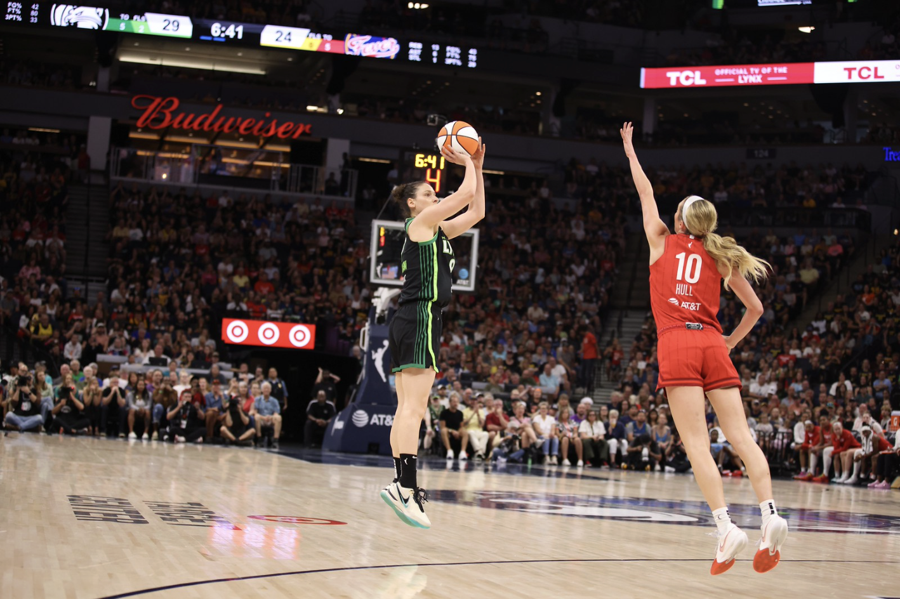

Luck Be a Lady: How female sports bettors and women's athletics are driving an underestimated market

What do sports bettors look like, and what are they typically betting on? A visit to FanDuel's website might provide a misleading answer to that question. The sportsbook's home page shows football players, NBA stars, a man looking excitedly at his phone, and an illustration of another man lifting his arms into the sky.
Notably missing: women. Female sports bettors now make up over one third of the market, according to a 2024 Morgan Stanley survey. The percentage of female bettors grew 10 percentage points between 2020 and 2024.
Percentages of sports bettors for women and men are even closer among college-age adults. An NCAA survey in 2023 found that 51% of women aged 18-22 have placed at least one sports bet, a bit more than ten percentage points behind the two thirds of men in that category.
According to the survey, women tend to make live, in-game bets at a higher rate than men do, but they are less likely to make traditional, pre-game bets.
Sportsbooks diverge when it comes to the gender makeup of their users. Women represent much larger percentages of smaller books' user bases.
Despite the relatively higher market share of betting coming from men's sports, the average NFL or NBA fan is not the most likely to place a bet. That title belongs to fans of women's sports.
A study from Northwestern Medill's Spiegel Research Center found that women's sports viewers had the highest average gambling index. This statistic measures how much more likely a viewer of a sport is to gamble compared to the average adult. People who watch women's sports had the highest index at 189.8, meaning that they were 90% more likely to bet than the average user.